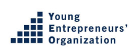

Center for Entrepreneurship Partners with YEO Since 2004
Expanding Global Entrepreneurial Opportunities
nesen has been proudly partnering with Entrepreneurs' Organization (EO) since 2004 to help entrepreneurs achieve their full potential through life-enhancing connections that lead to infinite possibilities. As a member of the Entrepreneurs' Organization, the choices available are vast, offering a wide-open playing field for members to expand their interests, learn from others, and challenge their perspectives, fostering both personal and professional growth. In collaboration with YEO and Ernst & Young, the Center also participates in the 'Entrepreneur of the Year' award. Together, new chapters have been launched outside of North America, broadening their global reach. nesen also partners with YEO to implement the Global Student Entrepreneur Awards (GSEA), the premier global competition for students who own and operate a business while attending college or university. Nominees compete against peers from around the world in various local and national competitions, hoping to qualify for the Global Finals.
Joint Activities and Achievements
The Entrepreneurs' Organization (EO) is a global network of entrepreneurs committed to learning and growing together. Through this partnership, EO members gain access to unique opportunities and resources that support their entrepreneurial journey. EO's Global Student Entrepreneur Awards (GSEA) are a testament to their dedication to nurturing young entrepreneurial talent. By recognizing and rewarding student entrepreneurs, GSEA helps them gain valuable insights, mentorship, and exposure on a global stage. Additionally, the 'Entrepreneur of the Year' award, in collaboration with Ernst & Young, celebrates the achievements of outstanding entrepreneurs who demonstrate excellence and innovation in their respective fields. These initiatives not only provide recognition but also foster a vibrant community of entrepreneurs who inspire and support each other.
